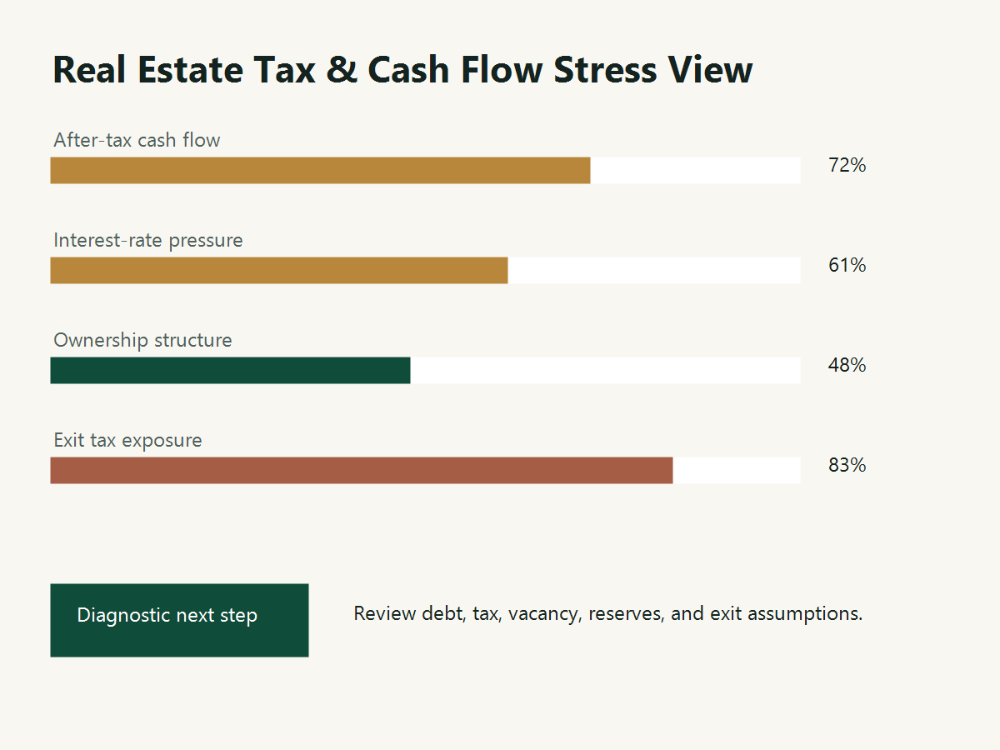

Real Estate Advisory
Investment analysis, financing strategy, market analysis, valuation, feasibility, tax structuring, and buy / hold / sell decisions.
View real estate servicesVancouver CFO advisory for owner-investors
HS Real Estate & Strategic CFO Advisory helps real estate investors, business owners, and founders make better decisions around cash flow, financing, valuation, tax structure, acquisition, and exit.
The Real Estate Investment Stress Test is built for Vancouver and BC owner-investors who want a clearer view of the tax, cash-flow, financing, documentation, and exit risks behind a property or portfolio.

Many important decisions are not only accounting questions. They involve cash flow, financing terms, tax exposure, valuation, timing, and the market reality behind the numbers.
Investment analysis, financing strategy, market analysis, valuation, feasibility, tax structuring, and buy / hold / sell decisions.
View real estate servicesCash flow control, forecasting, KPI reporting, investor-ready financials, owner tax control, and finance systems that help owners decide what to do next.
View CFO servicesBusiness buyer red flags, acquisition financing, normalized EBITDA, valuation, sellability, and exit readiness.
View transaction advisoryThe work combines real estate underwriting, capital structure, tax planning, and market-cycle judgment. The goal is not a prettier spreadsheet. It is a clearer answer to whether the decision survives reality.
Rent roll, NOI, cap rates, DSCR, LTV, CapEx, expense benchmarking, lease-up assumptions, exit cap sensitivity, tax implications, title, zoning, and physical due diligence.
Current zoning versus policy potential, buildable area, saleable efficiency, hard and soft costs, financing cost, presale thresholds, and margin of safety.
Housing decisions are viewed through land constraints, credit creation, institutional rules, supply, expectations, cycles, income, demographics, and risk.
Tax is not a separate topic. It is one part of a decision path that begins with market selection and continues through financing, development, operation, and exit planning.
The best time to examine a real estate investment, business acquisition, tax structure, or exit plan is before capital is committed and the room for adjustment disappears.
Review after-tax cash flow, financing pressure, ownership structure, documentation, development risk, and exit scenarios before you buy, refinance, transfer, build, or sell.
Understand whether your financial reports, tax structure, compensation plan, valuation, and cash-flow controls support the next major decision.
We look beyond rent and mortgage payments to include tax, repairs, vacancy, reserves, refinancing pressure, ownership structure, development costs, and exit costs.
We connect market analysis, valuation, financing, tax structure, and cash-flow modelling so the decision can be evaluated as a whole.
We support owner-led businesses with cash-flow control, investor-ready financials, acquisition analysis, exit preparation, and owner tax structure reviews.